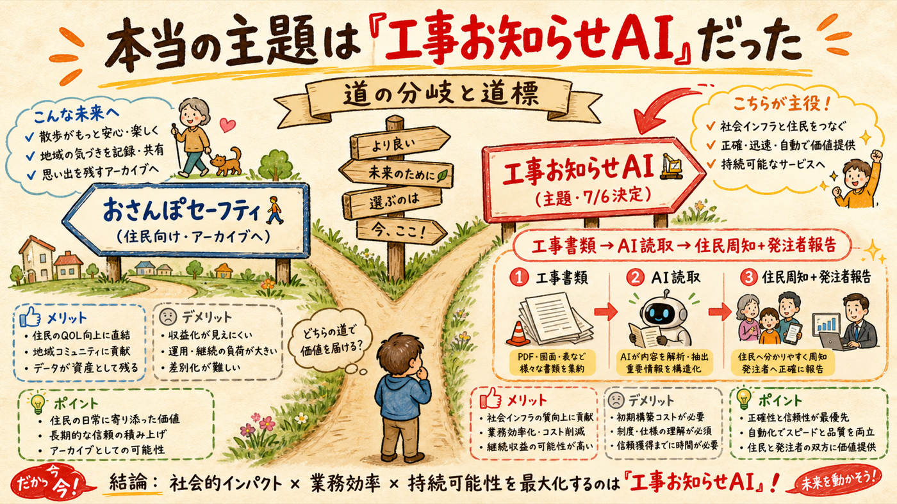
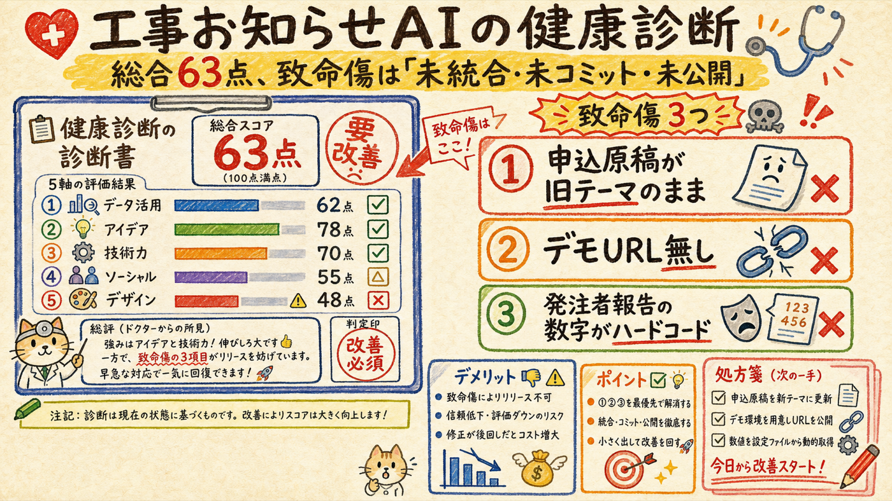
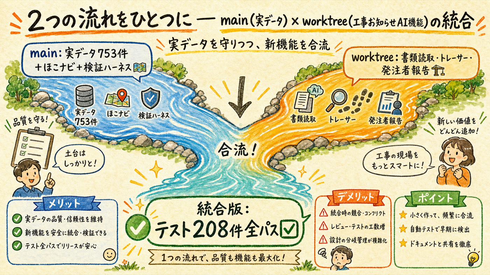
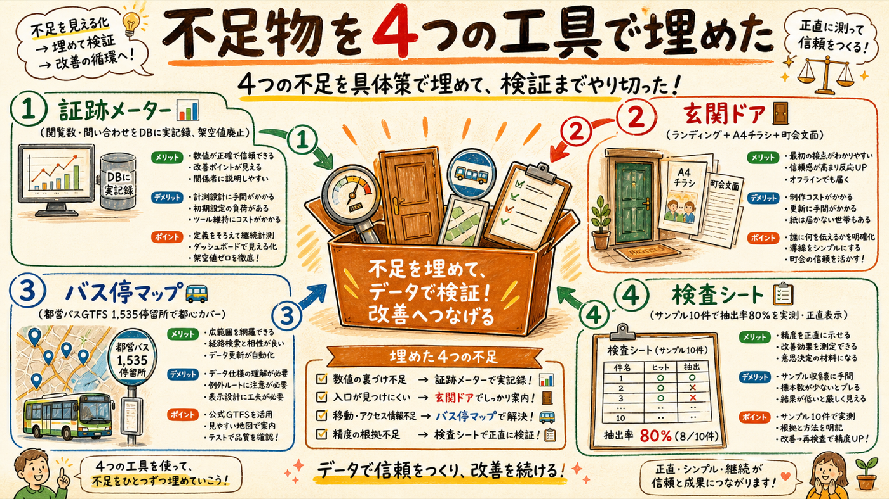
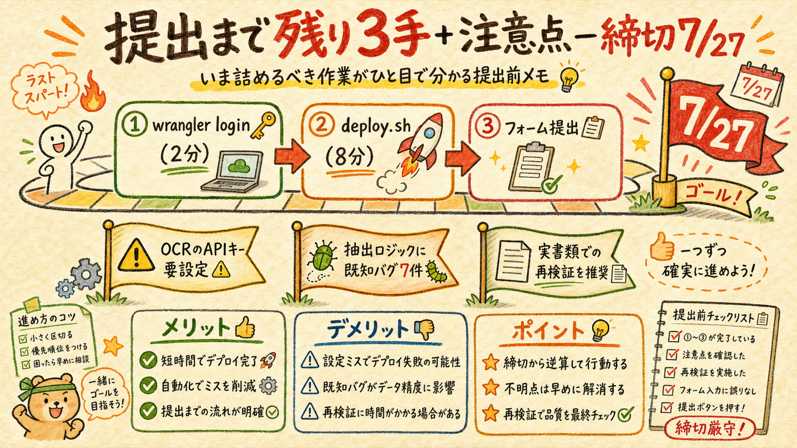

提出主題を「工事お知らせAI」に正して再検証。63点の致命傷（原稿ズレ・デモURL無し・証跡ハードコード・GTFS地理不整合）はすべて「未統合・未コミット・未公開」が原因だったため、worktreeとmainを統合し4laneで不足物を実装した。テストは162→208件全パス、主要フローは実測で動作確認済み。
wrangler login → bash scripts/deploy.sh → フォーム提出。＋OCRのAPIキー設定と、抽出ロジック既知バグ7件の扱い判断前回レポートの主題判定を訂正。一次情報（7/6 spec・worktree README）で確認

指摘を受けて記録を再実査した結果、docs/superpowers/specs/2026-07-06-construction-notice-ai-design.md に「主題は工事お知らせAIにする」と明記されており、実装本体も worktree construction-section-tracer（書類読取・帳票OCR・発注者報告・GTFS徒歩影響、12コミット）で進行していた。前回「おさんぽで確定」とした根拠は薄い記録の誤読で、これは接地の失敗。ただし前回作った実データETL753件・ほこナビ・検証ハーネス・nodejs_compat修正は同一コードベースの資産としてそのまま工事お知らせAIに効くため、無駄になった作業はない。
実装コアは本物と判定。減点は作れていないからではなく、まとまっていないから

| 審査軸 | 採点 | 主な根拠 |
|---|---|---|
| データ活用 | 62 | 753件+ほこナビはmain側に隔離されデモに未接続。GTFSは国立市のみで都心と地理不整合 |
| アイデア | 78 | 「既存書類→周知+発注者報告」の業務接続は強い |
| 技術力 | 70 | OCR構造化・幾何演算・レポート生成は実装本物（テストで確認） |
| ソーシャルインパクト | 55 | 実務者ヒアリング未実施、証跡が仮説段階 |
| サービスデザイン | 48 | トップが旧デモに着地／申込原稿が旧テーマ／発注者報告の数字がハードコード（views:128固定） |
審査で見抜かれると信頼を失う点が3つあった: ①審査員が最初に読む申込原稿が別製品（おさんぽセーフティ）のまま ②デモURL未着手 ③目玉の発注者報告の閲覧数・問い合わせ数が毎回ハードコードの架空値。いずれも18日で解消可能な「統合・コミット・公開」の問題と判定。
衝突4ファイルを解消してマージ。テスト101+101 → 208件全パス

stage1-mvp へマージ（b7c3a2a）。衝突は README・申込原稿・src/index.ts・.gitignore の4つで、方針（工事お知らせAI主題）に沿って解消nodejs_compat（OCR 502 の修正）と実データ753件が工事お知らせAIのデモに接続された/api/restrictions 765件・trace/notice/flyer 全200コミットはすべてローカルのみ。push・リモート追加は一切していない（git remote は空のまま）。
証跡の実データ化 / 導線とチラシ / 都心GTFS / 抽出検証の実測

| lane | 作ったもの | 実証 |
|---|---|---|
| ① 証跡実データ化 | notice_events テーブル＋API。閲覧・問い合わせ・公開・変更をD1に実記録。views:128等の架空値コードは削除、未計測時は「計測開始前」と正直表示 | POST view→GET stats で件数増加をcurl実証 |
| ② 導線・成果物 | トップを工事お知らせAIランディングに（旧デモは app.html に退避・導線維持）。A4印刷チラシ flyer.html＋町会・商店会向け文面。ODPT過大表記を是正 | / と flyer が200、印刷CSS確認 |
| ③ 都心GTFS | 都営バスGTFS（ODPT静的配布・CC BY 4.0）を取込み、国立市と結合した1,535停留所。都心753件の工事と「最寄り停留所」が実際にヒット | 東京駅〜新宿圏でヒット確認テスト |
| ④ 抽出検証 | 実務様式準拠サンプル10件（正直にサンプルと明記）で必須項目抽出率を実測: 80.0%、10件中6件が80%ゲート通過。結果を trace の検証パネルと docs/entry/validation-results.md に反映 | node scripts/validate-extraction.mjs で再現可能 |
検証ループは 64→85→82 で機械的合格ライン（90）には未達のまま max 到達したが、後半2周の減点はほぼ「実装が未コミット」への指摘（lane への私の指示と採点表の不整合）。機能面は3周とも実測で合格判定だったため、ループを打ち切り4つの論理コミットで解消した（54146f3〜d362237）。
3手で提出完了。ただし出す前に知っておくべきことが3つ

| 手順 | コマンド/場所 | 所要 |
|---|---|---|
| ① wrangler再認証 | チャットに ! npx wrangler login（d1:writeスコープが現トークンに無い） | 2分 |
| ② デプロイ | ! bash scripts/deploy.sh（D1作成→migrate→ANTHROPIC_API_KEY設定→deploy→smoke） | 8分 |
| ③ フォーム提出 | form.jotform.com/261468325066056 へ工事お知らせAI版原稿6項目＋新キャプチャ3点（書類読取/地図候補確認/QR・発注者報告） | 20分 |
注意点（正直に）: ① /api/ocr はローカルの .dev.vars のAPIキーが認証エラー（有効なANTHROPIC_API_KEYの設定が必要。本番はdeploy.shがsecret設定を案内） ② 抽出ロジックに既知バグ7件（全角数字・令和年号・「翌」またぎ時間・「歩道通行止め」の誤分類等 — 検証で発見済み、validation-results.md に記録。提出前に直すか「既知の制約」として扱うかは判断次第） ③ 検証パネルの80%はサンプルでの実測。実書類1〜2件での再検証と、工事事業者ヒアリング1〜2件が審査説得力を大きく上げる（審査員採点でも最優先改善に挙がった）。
login→deploy→提出の3手＋キャプチャ撮り直しで完了。コミットはローカルのみ、push は本人判断。